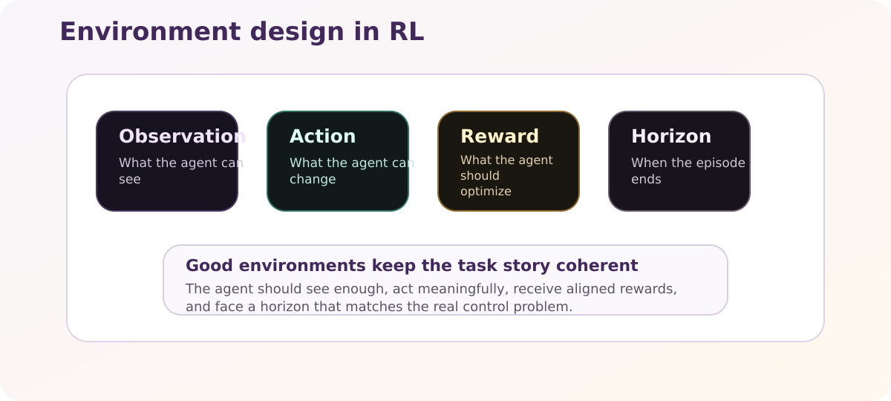

Environment Design¶
An RL environment is more than a simulator. It is the interface that defines what the learning problem looks like.
{kind=link}

Environment design determines what the agent can perceive, change, and optimize.¶
The Main Design Questions¶
At the formal level, many RL environments are described as a Markov decision process:
where states, actions, transition dynamics, rewards, and discounting together define what can be learned.
What does the agent observe?¶
Observations should contain the information needed for control, but not unnecessary noise when it can be avoided.
Typical observation types include:
vectors
grids or images
stacked frames
structured channels such as phase, load, or temperature
What can the agent do?¶
Actions define the control surface.
discrete actions are easier to handle and debug
continuous actions are often closer to physical control problems
The action space should be expressive enough to solve the task, but not so large that learning becomes unnecessarily hard.
What gets rewarded?¶
Rewards should reflect the real objective as directly as possible.
Good rewards are:
aligned with the task goal
stable across episodes
interpretable when learning fails
Bad rewards often reward shortcuts or proxy behavior instead of the intended outcome.
When does the episode end?¶
Episode termination defines the horizon.
This matters because a short horizon favors immediate gains, while a longer horizon makes credit assignment harder but can represent planning more faithfully.
Practical Design Rules¶
Keep the state-action-reward story clear¶
If you cannot explain in a few sentences what the agent sees, controls, and optimizes, the environment is probably still underspecified.
Make success measurable¶
Binary success metrics, distance-to-goal, energy usage, constraint violations, or trajectory smoothness can all matter. The key is to define metrics that remain useful during evaluation.
Separate physics from training convenience¶
Wrappers, normalization, frame stacking, and observation modifiers are training choices. They should not change the conceptual task unless that is deliberate.
Log enough context¶
In scientific RL, the environment should make debugging possible. Episode info, raw rollout data, and evaluation traces are often as important as the final reward.
Separate task definition from wrapper effects¶
Frame stacking, normalization, observation modifiers, and monitor wrappers change how the agent sees or records the task.
Those are important runtime decisions, but they should be thought of separately from the conceptual environment itself. Otherwise it becomes hard to tell whether an observed improvement came from a better policy or from a different observation pipeline.
Environment Outputs Beyond Reward¶
Beginners often think of an environment as something that returns only observation and reward. In practice, good research environments also expose structured extra information.
Typical examples include:
is_successor other task-completion flagsdiagnostic scores or constraint violations
physics-side quantities
rollout metadata for later dataset use
These outputs matter because evaluation, plotting, and dataset preprocessing often depend on them.
In other words, the environment does not only define how the agent learns. It also defines how researchers later interpret what happened.
ProcGen As Part Of Environment Design¶
In CTRL-P, some built-in environments support procedural or scenario-based inputs through ProcGen.
That means the environment design is not only:
observation space
action space
reward
horizon
It is also:
which scenarios can be generated
how train, val, and test distributions differ
whether scenario generation is reproducible across runs
This is especially important for built-in tasks where masks, loads, or other structured targets define what the agent should solve.
Why Raw Rollout Capture Matters¶
Dataset-driven workflows need access to what actually happened before later wrappers change the data.
That is why CTRL-P can capture:
raw observations
raw rewards
episode-level rollout information
before frame stacking or normalization are applied.
This becomes important when:
you train a behavior-cloning model
you compare online RL against offline methods
you want datasets that reflect the underlying task instead of the wrapped training surface
How This Appears In CTRL-P¶
In CTRL-P, environments define:
tasks such as
fillorfill_20observation channels and wrappers
rollout metadata
optional ProcGen scenario inputs
evaluation surfaces and reproducible resets
info fields such as success flags and diagnostics
The runtime then layers experiment settings such as vectorization, normalization, and rollout recording on top.